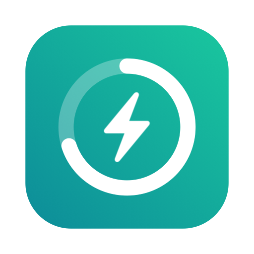

Datenschutzerklärung
Ladebudget · Stand: 30. September 2026
Kurz gesagt
Ladebudget erhebt keine personenbezogenen Daten beim Entwickler. Es gibt keine Benutzerkonten, keine Werbung, kein Tracking und keine Analyse-Werkzeuge. Alles, was du in der App einträgst, bleibt auf deinen Geräten und in deiner eigenen iCloud.
Verantwortlich
Sascha Binckly
E-Mail: ladebudget@binckly-labs.de
Welche Daten die App verarbeitet
Die App speichert die von dir eingegebenen Angaben – etwa Ladekosten, Datum und Uhrzeit, Energiemenge, Anbieter, Ladeort, geplante Reisen, Fixkosten, Budget- und Fahrzeugeinstellungen sowie den Namen, den du unter „Du“ einträgst.
Diese Daten werden lokal auf deinen Geräten gespeichert und über Apple iCloud (CloudKit) in deiner privaten iCloud-Datenbank synchronisiert. Der Entwickler hat darauf keinen Zugriff. Für die Verarbeitung durch Apple gilt die Datenschutzerklärung von Apple: apple.com/de/legal/privacy.
Gemeinsame Nutzung
Wenn du dein Budget über „Mit Partner:in teilen“ freigibst, erhalten die eingeladenen Personen über iCloud Zugriff auf die Daten dieses Budgets (Ladungen, Reisen, Fixkosten, Einstellungen) und können sie bearbeiten. Du kannst die Freigabe jederzeit in der App beenden.
Screenshots
Screenshots, die du zum Erfassen einer Ladung an die App übergibst, werden ausschließlich auf deinem Gerät mit der Texterkennung von Apple ausgewertet. Sie werden weder gespeichert noch übertragen.
Routenplanung
Für die Planung von Reisen sendet die App die eingegebenen Start- und Zielorte an Apple Karten, um Orte zu finden und die Strecke zu berechnen. Es gilt die Datenschutzerklärung von Apple.
Siri, Widgets und Benachrichtigungen
Siri-Befehle, Widgets und Warnungen werden von iOS, iPadOS, macOS bzw. watchOS auf deinem Gerät verarbeitet. Benachrichtigungen werden lokal erzeugt; es wird kein Push-Dienst des Entwicklers verwendet.
Löschen
Du kannst einzelne Einträge in der App löschen. Beim Löschen der App bleiben die Daten in deiner iCloud erhalten, bis du sie unter Einstellungen → [dein Name] → iCloud → Speicher verwalten → Ladebudget entfernst.
Deine Rechte
Da der Entwickler keine personenbezogenen Daten von dir speichert, liegen alle Daten in deiner Verfügung. Bei Fragen zum Datenschutz erreichst du uns unter der oben genannten E-Mail-Adresse. Du hast außerdem das Recht, dich bei einer Datenschutz-Aufsichtsbehörde zu beschweren.